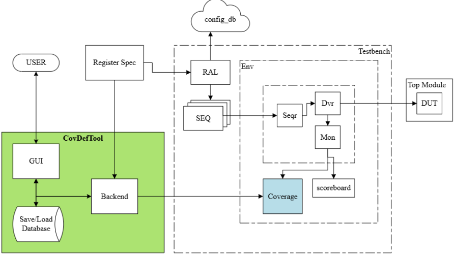
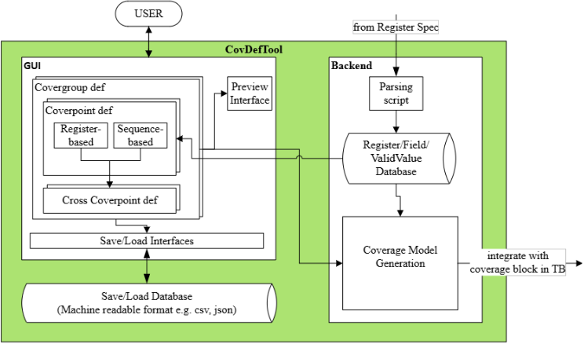
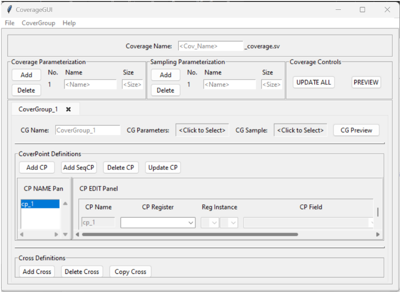
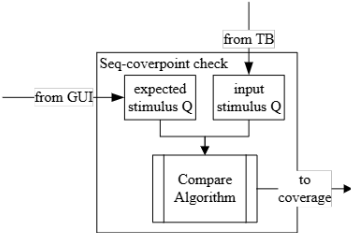
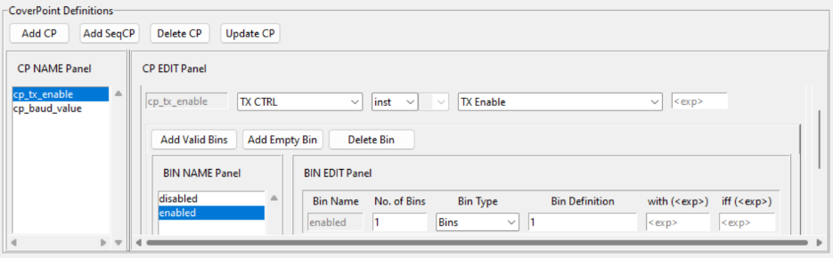
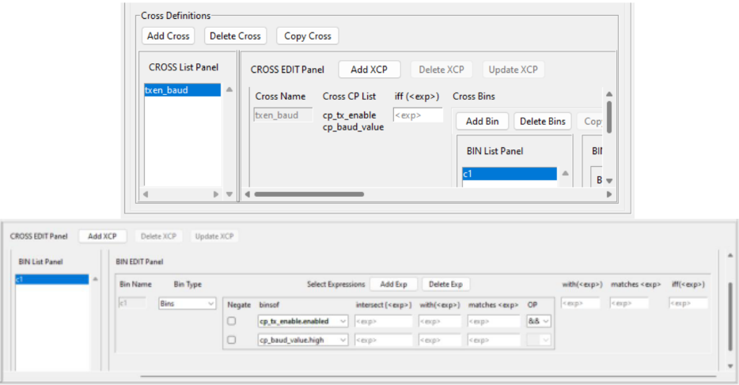
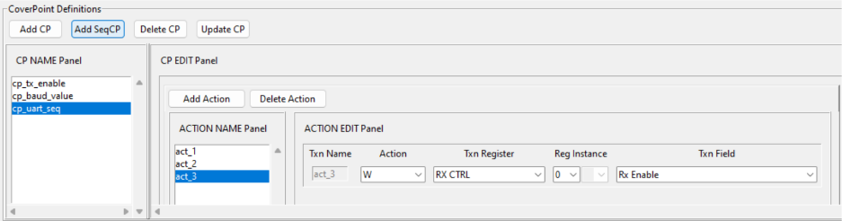

通过自动化简化基于 RAL 的交叉覆盖率（Cross-Coverage）与序列覆盖率（Sequence Coverage）定义
论文针对 UVM 验证流程中寄存器级 RTL 与 RAL 模型虽可从寄存器规格自动生成、但高阶覆盖率（cross coverage 与基于寄存器操作序列的 sequence coverage）仍依赖手工编码，导致冗余、不一致与低效的问题，提出一个以 GUI 为核心的模块化覆盖率定义框架 CovDefTool。该框架解析 IP 寄存器规格并建立索引数据库，让工程师基于寄存器/字段命名直接定义 covergroup、coverpoint、cross coverpoint 与 sequence coverpoint，屏蔽 RAL/LRM 语法细节；后端自动生成语法正确的 SystemVerilog 覆盖率类并自动编辑集成到 UVM testbench，模型以机器可读格式存储以支持复用。sequence coverpoint 通过 monitor 捕获寄存器事务队列、在采样点做期望队列与实际激励队列的子集比较实现，并以 dummy guard transaction 支持乱序段匹配。在多验证工程师实际部署中生成了 1,531 行覆盖率代码，开发时间从 32 人天降至 9 人天（减少 71%），缺陷从 210 个降至 36 个（减少 83%），且用工具重构某 covergroup 后发现一个此前逃逸的 corner case bug。该工作与团队覆盖率驱动验证和验证自动化能力域直接契合。
现有覆盖率自动化只能从寄存器规格自动生成字段级 bin，而最能考验 DUT 并发行为、暴露罕见 corner case 的高阶覆盖率模型（cross coverage、基于寄存器操作序列的 sequence coverage）无法自动生成，只能由工程师手工编写；随着设计复杂度和寄存器数量增长，手工定义变得耗时、易错，且多名工程师独立定义相似 coverpoint 和 cross 场景会造成碎片化，难以维护与复用。
提出 GUI 驱动的模块化框架 CovDefTool：前端 GUI 抽象底层 RAL 访问语法与 LRM 覆盖率语法，用户基于寄存器/字段命名交互式定义 covergroup、coverpoint、cross coverpoint 与 sequence coverpoint；后端解析寄存器规格并存入索引数据库，Coverage Model Generation 模块将寄存器信息与用户定义结合，生成含嵌入式 covergroup 的语法正确的 SystemVerilog 覆盖率类，并感知 testbench 结构、自动编辑 testbench 文件完成实例化集成与采样函数的事件触发绑定。字段宽度 <4 映射为按规格命名的显式 bin，宽度 ≥4 划分为三个均匀区间。sequence coverpoint 将 monitor 捕获的寄存器事务存入 input_txn_q，用户经 GUI 提供的期望序列转为 exp_txn_q，采样点调用 is_sequence_subset 按 Action/Register/Field/Value 比较（字段写通过 field mask 匹配），乱序段用 dummy guard transaction 圈定边界；仅在采样点做队列比较，无需额外实时监控线程。模型以机器可读格式存入外部数据库，支持加载、扩展与跨用户复用。
工具在多名验证工程师间部署，生成 1,531 行覆盖率代码作为性能评估数据集
开发时间减少 71%：GUI 方法仅需 9 人天，等效手工实现需 32 人天
缺陷减少 83%：GUI 生成代码仅 36 个错误，手工编写代码为 210 个错误
用工具重写某 covergroup 后发现一个此前未被检测到的 corner case bug，定位并修复了既有测试编程中的覆盖缺口
已有覆盖率自动化局限于从寄存器规格直接派生的字段级 bin；本文将自动化扩展到无法自动生成的高阶覆盖率——cross coverage 与 sequence-based coverpoint：通过 GUI 抽象 RAL/LRM 语法使不精通 UVM/RAL 的工程师也能定义复杂覆盖率模型，配合机器可读的覆盖率模型数据库实现跨团队复用与跨 legacy/新增覆盖的交叉定义，并自动完成 testbench 集成。sequence coverage 采用采样点队列子集比较加 guard transaction 的资源高效实现，可表达简单 transition coverpoint 或大量 cross coverpoint 难以刻画的复杂测试场景。
相关度级别：high
命中能力域：2.4 设计验证方法学 | 2.7 EDA/验证自动化与 AI 辅助
理由：论文直接命中 2.4 设计验证方法学的核心技术：UVM/SystemVerilog testbench 中的覆盖率驱动验证，给出 RAL-based cross coverage 与 sequence coverage 的系统化定义方法；同时命中 2.7 验证自动化与可复用框架：GUI 工具、寄存器规格解析、代码自动生成、机器可读模型库与自动 testbench 集成。团队交付 LPDDR4/5X/6、HBM4、UCIe 等寄存器密集型 IP，其配置寄存器交叉约束（如 enable 与频率/模式字段组合）和寄存器编程序列（如 training/init flow）正是该工具的目标场景，可直接提升覆盖率建模效率、一致性与复用度。
建议动作：深入精读并做内部分享
通过自动化精简基于寄存器抽象层（RAL）的交叉覆盖率与序列覆盖率
Satyajit Sinari, Vijayakrishnan Rousseau, Ram Immaneni, Mangayarkarasi Arumugam, Prasad Shah, Raghavendra C K
英特尔公司，美国福尔瑟姆
satyajit.j.sinari@intel.com vijayakrishnan.rousseau@intel.com ram.n.immaneni@intel.com mangayarkarasi.arumugam@intel.com
prasad.s.shah@intel.com
raghavendra.c.k@intel.com
摘要 - 现代硬件验证日益依赖自动化来提升效率、一致性和覆盖率质量。尽管寄存器级 RTL 和通用验证方法学（UVM）寄存器抽象层（RAL）模型可以从寄存器规格中自动生成，但覆盖率自动化传统上一直聚焦于直接从这些规格派生的字段级 bin。然而，最关键的覆盖率模型是那些通过并发对被测器件（DUT）施加压力或暴露罕见极端场景的模型。这些覆盖点对于子系统和片上系统（SoC）验证至关重要，无法自动生成，通常需要手工编码，从而导致冗余、不一致和低效。本文提出了一种以图形用户界面（GUI）为核心的新型模块化框架，使验证工程师能够高效地定义、管理和复用复杂的覆盖率模型。该框架解析知识产权（IP）寄存器规格以提供对寄存器库的直接访问，并支持直观地构建 covergroup、coverpoint、交叉 coverpoint 以及基于序列的 coverpoint。它允许用户以机器可读格式保存和加载模型、预览生成的 SystemVerilog 代码，并将覆盖率模型无缝集成到 UVM 验证平台中，从而加速覆盖率定义。该工作流程减少了人为错误并提升了生产力。结果表明，覆盖率模型的创建速率、复用和集成均有显著改进，从而为复杂硬件设计的稳健验证提供了支持。
图1展示了在基于通用验证方法学（UVM）的验证平台中进行覆盖率定义的精简工作流程。CovDefTool Block 作为中央枢纽，通过图形用户界面（GUI）直接与用户交互，负责后台处理与脚本任务，并保持对覆盖率模型数据库的无缝访问。
总体而言，该工作流程强调模块化与自动化的方法，包括用于覆盖率定义的简化工具、机器可读的存储以及代码生成。这种设置简化了用户的工作流程，减少了人工错误，并加快了为复杂硬件设计构建健壮覆盖率模型的过程。

图2展示了 CovDefTool Block 的工作流程，它作为一个集成模块，不仅涵盖 GUI 与后台功能，还负责管理覆盖率模型数据库。这种集成设计简化了用户交互，实现了处理任务的自动化，并为覆盖率模型验证工作流程提供了稳健的数据处理。

图3展示了 CovDefTool 的图形用户界面（GUI）窗口，即前端，该窗口整合了后续章节中详细介绍的各个界面组件。这一前端界面使用户能够以交互方式定义、保存和加载覆盖率模型，从而便于验证测试平台的配置与管理。

图2详细描绘了 GUI 后端模块的架构与工作流程。后端模块负责解析寄存器规范、提取相关数据，并将这些信息存储在索引数据库中，以便前端进行高效检索。随后，覆盖率模型生成（Coverage Model Generation）模块查询该索引数据库，将提取出的寄存器信息与用户提供的覆盖率定义细节相结合。利用这一组合数据，覆盖率模型生成模块生成一个 SystemVerilog 文件，其中包含一个语法正确的覆盖率类，该类由基于寄存器抽象层（RAL）的嵌入式 covergroup 和 coverpoint 组成。
对于基于序列的 coverpoint，需要在覆盖率模型之外添加额外的逻辑。必须从 monitor 捕获所有输入寄存器事务并将其存储在一个队列中，如图4所示。所有用户提供的序列 coverpoint 都会被转换为期望队列，其中包含用户所要求的寄存器事务序列。在采样点处，将期望队列与实际激励队列进行比较，以检查当前测试中是否发生了期望的寄存器事务序列。覆盖率依据该比较函数返回的状态位进行采集。
后端在设计上能够感知测试平台的结构，从而能够自动编辑所需的测试平台文件，并根据覆盖率参数以正确的例化方式将覆盖率模型无缝集成到测试平台中。采样函数使用通过前端提供的事件触发信息进行重写，并在测试平台内的必要位置被定义和调用。
该接口允许将已定义的覆盖率模型以机器可读格式的文件保存到外部数据库中。得益于该框架的模块化特性，用户可以加载现有模型来扩展或修改覆盖率。这一能力加速了针对新功能的覆盖率定义，尤其是在将遗留覆盖率与新增覆盖率进行交叉时，并减少了冗余。

作为案例研究，我们考虑一个实现通用异步收发器（UART）的假想知识产权（IP）核，UART 是一种广泛使用的硬件通信协议，可便于两个设备之间进行串行数据交换。针对该 IP，规定了一组寄存器集合，详细说明了每个 UART 寄存器的地址偏移量及对应字段。表 I 给出了一个 TX CTRL（Transmission Control，发送控制）寄存器规格示例，以及通过预定义 RAL 对其进行的相应访问。
| Register Name | Address Offset | Fields (bit positions) | Description | RAL access of fields |
|---|---|---|---|---|
| TX CTRL | 0x00, 0x04, 0x08, 0x0C | TX Enable (0) Parity Enable (1) | Controls IP operation and reset. | ral_reg.tx_ctrl_reg[inst].tx_enable ral_reg.tx_ctrl_reg[inst].parity_enable |
| Register Name | Address Offset | Fields (bit positions) | Description | RAL access of fields |
RAL 模型通过支持为每个寄存器字段定义覆盖点（coverpoint）及其关联的 bin，从而便于功能覆盖率的集成。图 5 展示了 CoverPoint（CP）定义界面，如 CP Name Panel 中所示，其中定义了两个覆盖点 cp_tx_enable 和 cp_baud_value。每当选中一个覆盖点时，即可在 CP Edit Panel 中查看和编辑该覆盖点的配置细节。有效的字段值会通过算法转换为 bin：宽度 < 4 的字段被映射为按照寄存器规格命名的显式 bin，而宽度 ≥ 4 的字段则被划分为三个均匀分布的范围。
图 6 展示了交叉覆盖率（cross coverage）界面，该界面演示了覆盖率驱动验证中的一个基本用例。该界面允许用户从 CP Name Panel 窗口中选择任意数量的覆盖点，并使用 Add Cross 按钮在这些覆盖点之间建立交叉覆盖率。在所示示例中，交叉覆盖率配置在两个先前定义的覆盖点之间。该示例专门用于验证当发送器被使能时能够观测到高波特率值，从而确保这两个参数之间正确的功能交互。
该示例所展示的方法本质上具备可扩展性。它不仅可以扩展到涵盖同一知识产权（IP）模块内的其他寄存器，还可以扩展到跨多个 IP 的寄存器。GUI 通过支持访问多个 RAL 及其关联的寄存器来促进这种可扩展性，从而支持在更广泛的验证空间中进行全面的交叉覆盖率分析。图 7 展示了使用 CovDefTool 生成的最终 covergroup 代码。


covergroup CoverGroup_1(int inst); //Enabled option to track coverage for each instance of covergroup option.per_instance = 1; // Coverpoint for TX_CTRL Register/TX Enable Field cp_tx_enable: coverpoint ral_reg.tx_ctrl_reg[inst].tx_enable.value { bins disabled = {0}; bins enabled = {1}; } // Coverpoint for BAUD Register/Baud Value Field cp_baud_value: coverpoint ral_reg.baud_reg[inst].baud_value.value { bins low = {[0:9600]}; bins medium = {[9601:115200]}; bins high = {[115201:$]}; CROSS Definitions txen_baud: cross cp_tx_enable, cp_baud_value { bins c1 = binsof (cp_tx_enable.enabled) && binsof (cp_baud_value.high); } endgroup
在仿真过程中，输入激励通过测试平台中的寄存器抽象层（RAL）寄存器事务提供。该序列被捕获，并作为覆盖率块的一部分被推入输入激励队列（input_txn_q）。用户通过图形用户界面（GUI）提供需要跟踪的期望序列列表，如图 8 所示。
图 9 展示了序列覆盖组（covergroup）sample1_sequence，其中定义了一个覆盖点（coverpoint）uart_seq_en。该 coverpoint 基于 check_uart_sequence 函数的返回值触发，具体跟踪与该返回值相关联的 enabled bin。check_uart_sequence 函数负责生成 exp_txn_q，随后在采样点调用 is_sequence_subset 函数，以检查 exp_txn_q 是否为 input_txn_q 的子集。值得注意的是，这种覆盖率机制并不保证序列在功能上成功执行；而是提供一种洞察，表明测试平台是否已对指定序列进行了编程。is_sequence_subset 函数中的比较算法检查特定的寄存器事务模式是否在捕获的激励数据中按正确顺序发生。对于 exp_txn_q 中的每个事务，该算法会比较 Action、Register 和 Field 名称以及 Value。由于 input_txn_q 仅包含完整的 32 位寄存器写入，当 exp_txn_q 指定对特定寄存器字段的写事务时，会计算一个字段掩码（field mask）并将其应用于 input_txn_q 中的相应值，以识别匹配。
为处理序列中的事务子集可能以任意顺序出现的情况，该方法在 exp_txn_q 中无序区段的边界处引入虚拟守护事务（dummy guard transaction），其具体位置由用户通过 GUI 指定。这样，只要在 input_txn_q 中的守护事务之间观察到所有相关事务，比较算法即可返回成功匹配，而无论其顺序如何，且中间没有夹杂任何无关事务。
This approach can be extended to define coverpoints for a wide range of complex test scenarios. Such scenarios are difficult to capture using simple transition coverpoints or even extensive cross coverpoint definitions, highlighting the flexibility and utility of the proposed sequence covergroup methodology. This approach is resourceefficient, as it performs queue comparisons only at sampling points, thereby obviating the need for additional threads to monitor transactions in real time. Furthermore, a database of exp_txn_qs is maintained in a machinereadable format, enabling easy loading, modification, and reuse by different users. The memory footprint remains minimal, as the exp_txn_qs are instantiated only within the scope of the comparison task, requiring storage of the input stimulus in a packed structure during simulation. Additionally, cross coverage can be defined on these sequence-based coverpoints to determine whether multiple sequences are observed before the sampling point. However, a limitation of this approach is that the temporal ordering of coverpoint hits cannot be determined solely through cross coverage; additional logic would be required to capture such ordering information.

//Generated using GUI backend covergroup sample1_sequence(int inst); // Track individual enable bits for each instance cp_uart_seq: coverpoint check_uart_sequence(inst) { bins enabled = {1'b1}; } endgroup //Generated using GUI backend function bit check_uart_sequence(int inst); reg_action_def exp_txn_q[$]; exp_txn_q.push_back('{Action:WRITE_REG, Reg: ral_reg.baud_reg[inst], Field: ral_reg.baud_reg[inst].baud_rate, Value:16'h1c200}); exp_txn_q.push_back('{Action:WRITE_REG, Reg: ral_reg.tx_ctrl_reg[inst], Field: nul1, Value:32'h3}); exp_txn_q.push_back('{Action:WRITE_REG, Reg: ral_reg.rx_ctrl_reg[inst], Field: null, Value:32'h3}); exp_txn_q.push_back('{Action:POLL_REG, Reg: ral_reg.status_reg[inst], Field: ral_reg.status_reg[inst].error, Value:1'h0}); exp_txn_q.push_back('{Action:WRITE_REG, Reg: ral_reg.tx_ctrl_reg[inst], Field: ral_reg.tx_ctrl_reg[inst].tx_enable, Value:1'h0}); // Check if expected sequence is subset of input_stimulus return is_sequence_subset (exp_txn_q) ; endfunction
当前的覆盖率集成框架是为在特定通用验证方法学（UVM）测试平台中高效工作而开发的，能够为 IP 级设计实现精确采样和针对性验证。这一聚焦式实现已在捕获与功能活动相一致的有意义覆盖率方面展现出良好效果。随着我们向片上系统（SoC）级环境扩展——此类环境涉及多个 IP、层次化的测试平台结构以及共享的验证组件——下一步是将集成层通用化。通过引入抽象机制和可配置接口，该工具能够动态适应多样化的测试平台架构，而无需进行大量定制。这一演进将实现跨不同 SoC 平台的无缝部署，促进覆盖率驱动验证中的复用、可扩展性和一致性。
寄存器数据可按需加载，以缩短初始加载时间并防止图形用户界面（GUI）过载，这在大型 SoC 环境中尤为重要。将引入高级搜索、标记和过滤功能，使用户能够按名称、类型、访问模式和覆盖率状态等属性高效地定位寄存器。寄存器还可以被组织为逻辑组，例如 regfile 或特性集，并通过可折叠视图来简化导航、减少视觉杂乱。为了应对 bin 爆炸问题，该工具支持在 covergroup 或 coverpoint 层级使用 cross_auto_bin_max，当至少定义了一个显式 cross 时，该选项会自动排除所有自动生成的 cross。此外，该 GUI 鼓励使用 illegal bin 和 ignore bin，使用户能够排除与当前验证场景无关的覆盖率 bin，从而将覆盖率分析聚焦于有意义的结果。
将对断言或专用监视器进行作用域限定，以验证采样仅在正确的条件下发生。这将防止因不正确或过早的采样而产生的虚假覆盖率命中。
对于非基于 UVM 的环境的适用性不在本文探讨范围之内，但将在未来予以考虑。
所提出的图形用户界面（GUI）框架在硬件验证工作流程的覆盖率定义效率和准确性方面展现出显著提升。该 GUI 工具被部署给多名验证工程师使用，用于开发全面的覆盖率模型，包括复杂的交叉覆盖率（cross-coverage）场景。该实现生成了多达 1,531 行覆盖率代码的庞大代码库，为性能评估提供了稳健的数据集。对传统手工编码方法与基于 GUI 的方法进行的对比分析显示出显著的效率提升。GUI 方法将开发时间缩短了 71%，仅需 9 人天，而等效的手工实现则需要 32 人天。这一大幅度的耗时降低转化为显著的资源优化和更快的项目交付周期。
除效率提升之外，该 GUI 框架在覆盖率代码生成方面还表现出更优的准确性。错误分析显示缺陷减少了 83%：GUI 生成的代码中仅识别出 36 个错误，而手工编写的代码中则有 210 个错误。代码质量的这一显著改善可归因于该框架内置的验证机制、标准化的模板，以及消除了与语法相关的人为错误。
在使用所部署的工具重写某个特定的 covergroup 之后，发现了一个此前未被检测到的边角情况（corner case）缺陷。使用新工具重构该 covergroup 的过程揭示了现有测试编程中的一个缺口，正是这一缺口此前使该缺陷得以逃过检测。在识别并弥补这一缺口之后，潜在的缺陷随即暴露出来并得到了修复。这一发现凸显了该工具在增强覆盖率定义、提升验证彻底性方面的有效性，最终促成了那些否则可能一直未被察觉的细微设计问题的识别与解决。